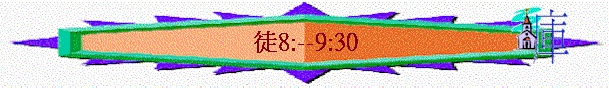

|
作主見證的經過 |
||||
|
緒論 |
預備 |
開始－在耶路撒冷作見證 |
擴張－在撒瑪利亞－猶大作見證 |
延伸－至地極作見證 |
|
1 |
２－７ |
８－１２ |
１３－２８ |
|
三）擴張
－ 在撒瑪利亞和猶大作見證（８－１２）１）有分散的傳道者
－ 門徒（擴張至猶大作見證）（８：１－２５）ａ）分散的原因
ｂ）分散下突破
i）門徒作傳道工作 － 不單是使徒
ii）門徒往各處傳道 － 不單是自己家鄉
iii）腓利下撒瑪利亞去 － 不單是自己所愛的人
iv）撒瑪利亞人領受聖靈 － 不單是耶路撒冷同胞
２）有聽命的僕人 － 腓利（擴張至非洲）（８：２６－４０）
ａ）絕對的聽命
i）立刻
ii）不問理由
iii）目的純正
iv）用行動踏上
v）不住的
ｂ）聽命的結果
i）被神使用
ii）成就神工
iii）繼續傳道
３）有合用的器皿 － 掃羅（預備延伸至地極）（９：１－３０）
ａ）掃羅的為人
ｂ）掃羅的改變 － 遇見主後成合用器皿
i）真正的認識
（1） 認識基督
（2） 認識自己
（3） 認識事奉
（4） 認識前路
ii）生命的改變
（1） 瞎眼 -> 能看見
（2） 屬肉體 -> 被聖靈充滿
（3） 罪污 -> 被洗去
（4） 軟弱 -> 起來、健壯
（5） 抵擋主 -> 傳揚主